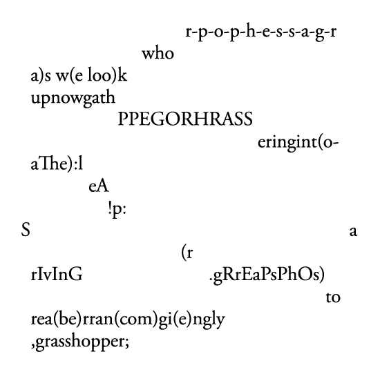

Early Internet
 From the early days of electronic computers in the 1960s, separate institutions linked their machines
together to form the first computer networks, where information and data can be exchanged between research
organisations.
A common language and protocol was set up to send data, files and the first email messages to the other side
of the country over long data cables that crossed land and sea.
The results of a scientific experiement conducted in one city can be analysed by researches in another,
enabling
a new form of collaboration never before seen.
From the early days of electronic computers in the 1960s, separate institutions linked their machines
together to form the first computer networks, where information and data can be exchanged between research
organisations.
A common language and protocol was set up to send data, files and the first email messages to the other side
of the country over long data cables that crossed land and sea.
The results of a scientific experiement conducted in one city can be analysed by researches in another,
enabling
a new form of collaboration never before seen.
However, this was not the "web" that we might recognise it - there were no websites, links, or browsing in
the early days.
Hypertext and the first webpages
In 1989, Tim Berners-Lee, a particle physicist, invents a coding language to format digital documents and
included basic typographic features.

Tim Berners-Lee, image: CERN
Hyper Text Markup Language (HTML) allowed scientists to write digital documents, articles, research
papers etc that can be shared over the network to anyone with access to the network and with the address of
the page.
He also wrote the first web-browser, a computer interface that renders and displays these documents
to the screen, enabling the user to scroll and read the texts.
Researchers no longer had to wait for the time-consuming process of publishing their works in print media,
but could instantly share their articles with others.
The code was easy to write, where different elements were referenced by <tags> and a simple, nested syntax.
Web document features
Introduction
The basics of a web document included typographic features that were common in print media, such as
headings, subheadings, paragraphs, as well as
other useful elements such as
- numbered
- item
- lists,
and other standard text formattings.
But, the most important feature
Was the ability to create hyperlinks to other
documents.
With this, a document became a "node" of a vast network of inter-linked pages that can be explored,
a powerful tool that enabled a non-linear interface to consume information. Thus, the web was born.
The web evolves
The utility of such a technology was immediately recognised, and the format was adopted by others.
In 1993, there were 130 websites, and only two years later it grew to over 23,000.
With a growing popularity, new features were gradually added to the language, such as the ability to
change fonts, add
colour
as well as images and more advanced layouting features.
However, much of the early internet was still in the hands of professional institutions and scientists.

Early features of the web can be traced by exploring the profile pages of university professors. Source:
Prof. Dr. Style by
Olia Lialina
The role of webpage continued to mature and broaden its function from static pages of information into
interfaces for e-commerce, discourse, and interactive tools. They utilised new interactive elements such
as
Concrete Poetry
Meanwhile, around 100 years prior to this new typographic technology, experiments in breaking the
layout-norms of the
industrial standard of typewritten and printed text began to emerge, in advertising and in avant-garde
poetry.

The Grasshopper (1935), E.E. Cummings
A World of Language (1965), Pierre and Ilse Garnier
The boundaries of the text and type formating in media were pushed to their
extreme
as artists and designers questioned the linearity of
the print medium, and break free from a grid defined by letters and text.
The net.art movement
In the mid 1990s, digital artists also began to question and investigate the possibilities of this new
digital material.
Artists used the elements of HTML as objects to build digital scultpures and interactive story-telling
devices
net.art has a strong influence with hacker culture, whereby the artist use the tools in un-intended ways.
wwwwwwwww.jodi.org (1995), Jodi
Anyone can create a net.art work, all that is needed is a text editor and a browser to view the result. This
radicality is rare in many art forms that often required investment in materials, tools, space and time.

Simple Net Art Diagram (1997), MTAA
It often criticised the booming commercial interest in the world wide web, questioning the democratic
promise of the internet.
Some of these webpages became counter-cultural platforms for publication.
some references:
Legacy of net.art
Contemporary digital artists continue the tradition of the net.art movement: